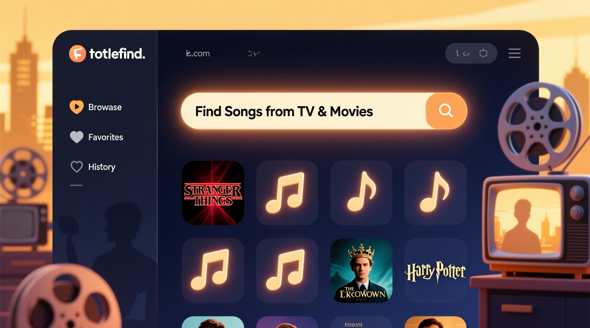

深夜刷剧被一段 BGM 戳中，我是怎么在三分钟内揪出它的
看剧时被某段配乐击中却不知道名字，是很多人都有过的尴尬瞬间。Shazam 在对白密集的场景下常常识别失败，直到有人告诉我 Tunefind 这个社区驱动的音乐索引平台。
那天凌晨一点半，我靠在沙发上刷着一部已经追到第四季的美剧。画面里主角骑着自行车穿过小镇的长镜头，风把她的头发吹得贴在脸上，背景里那段旋律像一条暗线，把整个场景的情绪都绷紧了。
我手里的遥控停在嘴边，脑子里只有一个念头：这歌到底是什么？
听歌识曲失灵的夜晚
先掏出手机开了 Shazam，对着音箱举了半分钟。结果弹出来的是一行灰字："未能识别"。
也难怪——那段旋律是纯器乐，背景里还有远处的引擎声和风吹树叶的沙沙声，对白虽然停了但环境音太杂，音频指纹匹配不上。换了 SoundHound，一样的结果。
我不死心，在 IMDb 翻这部剧的音乐列表，第四季第四集的页面下面列了十几首歌，没有一首看起来像那段配乐。Google 搜"怪奇物语 S4E4 插曲"，出来的全是营销号的标题党，正经信息一条都没有。
这时候我才意识到一个尴尬的事实：听歌识曲工具不是万能的。只要对白多、只要是纯器乐、只要音频被压缩过一次，它们的成功率就会骤降到百分之二十出头。我手里攥着手机，盯着画面里主角消失在树林尽头，那段旋律的余韵还在耳边转，但就是没处下手。
朋友甩来一个链接
第二天上班跟同事吐槽这件事，他头也没抬，直接扔过来一个网址："你试试这个——Tunefind 官网。"
我当时以为又是另一个听歌识曲 App，点进去才发现完全不是一回事。首页长得像维基百科和歌单的混合体——顶部是一排影视剧分类，中间是 Trending Right Now 排行榜，底部是"社区最近提交的歌曲"。没有"开始识别"的大按钮，没有麦克风图标。
它的思路从根上就不一样：不用你采集音频，因为已经有人替你整理好了。

按场景找歌的快乐
我在搜索框里敲了剧名和集数，页面跳出来的结构让我愣了一下——整整一季的所有集数按顺序排开，每一集点进去就是一个独立页面，里面列出了这集出现过的所有音乐，精确到出现的时间点和对应的场景描述。
第四集的页面里，在第 42 分钟那条记录下面写着："Max 骑车冲出小镇，一路穿过树林前往 Vecna 的老巢"。歌名是 *Running Up That Hill*，艺术家是 Kate Bush。旁边有个绿色的对勾标记，表示这是经过社区投票验证过的。
我点了一下歌曲条目下方的播放按钮，站内开始播放三十秒的预览片段——是 Apple Music 提供的试听。第一个音符出来我就确认了：对，就是这段。
从打开 Tunefind 到确认歌名，前后加起来不到三分钟。对比之下，前一天晚上我用听歌识曲和搜索引擎折腾了快一个小时，一点进展都没有。
为什么它比听歌识曲靠谱
后来我去tunefind文档翻了一下，才明白两者的本质区别。
Tunefind 根本不走音频指纹匹配那一套。它的核心资产是社区贡献的结构化数据——音乐总监会官方提交影视剧用了哪些歌，普通用户可以注册后自己提交听到的曲目，艺术家和厂牌也会主动告知自己的作品被使用了。所有提交都经过投票验证，拿到足够多的肯定票之后会被标记成"已验证"。
截至 2024 年中，这个平台已经索引了两万多部剧集、一万八千多部电影，超过一百万条经过验证的音乐线索。这个量级不是单个 App 能靠算法自动爬出来的——它靠的是一个活跃的音乐爱好者社区。
而且它索引的不只是电视剧和电影。视频游戏里的背景音乐、商业广告里出现的歌曲，全都在它的覆盖范围内。我后来在一个冷门独立游戏里听到一首钢琴曲，也是靠它按游戏名搜到的，连作曲家的名字都直接列在页面上。它的Tunefind下载页面也整理了各类流媒体跳转入口的说明。
纯器乐 BGM 怎么找才对
那次之后我又遇到过几次"听到但找不到"的情况，尤其是纯器乐的原创配乐——就是影视专门为某一场戏定制的背景乐，没有歌词，也不是商业发行的歌曲。
Tunefind文档 里专门有一个章节讲这种情况。它帮我理清了三种可能：
第一种是作曲家的原创 Score。这时候直接去查这部剧的 composer 是谁——页面上基本都会标注，或者 IMDb 上一搜就有。然后在 Tunefind 上搜这位作曲家的名字，进去他的艺术家页面，就能看到他为这部剧创作的所有曲目。如果该剧发行过正式的 Score Album，页面上会直接标出来，点一下就能跳转到流媒体平台。
第二种是 Production Music Library 的资源——就是影视制作方花钱从音乐库买来的授权音乐。这种东西比较麻烦，它不会出现在 Spotify 或 Apple Music 的普通搜索里，版权属于音乐库公司。这时候 Google 搜剧名 + "production music" 加场景描述比任何听歌识曲工具都管用，实在不行就去 Tunefind 对应剧集页面的 Q&A 区提问，社区里总有见多识广的老用户。
第三种其实是最简单的——一首歌的纯音乐版本。影视里用了 *Running Up That Hill* 的 instrumental 版，但你在流媒体上搜原歌名加 "instrumental" 就能找到。Tunefind 先帮你定位到了原歌名字，剩下的就是普通搜索了。
被动发现：每周花三分钟刷 Trending
现在我养成了一个小习惯：每周一上午打开 Tunefind 的 Last Week 排行榜，花三分钟刷一遍。
这个榜单和 Spotify 那些 "Top TV Soundtracks" 歌单的区别挺有意思。流媒体只会告诉你"这是一首影视歌曲"，但 Tunefind 会告诉你它最近在哪部剧的哪个场景火了。我在 Last Week 榜上看到 *Running Up That Hill* 排第一的时候，旁边标注了"《怪奇物语》S4E4 Max 骑车那段"——多了一层场景上下文，感觉完全不一样。
有时候榜单上会出现一些冷门作品，比如某个独立游戏里的原声、某条我没见过的商业广告里的 BGM。点进去听一下预览片段，觉得对味就收藏到自己的 Favorite 里。这种"顺便挖到宝"的感觉，比带着明确目标去搜要愉快得多。
关于下载这件事
说到这里得提一句——Tunefind 不提供任何下载链接。
每首歌下面只有跳转按钮：Apple Music、Spotify、Amazon Music 或者 iTunes 商店购买。预览片段是三十秒的试听，完整版本得跳转到对应流媒体平台去听或下载。社区指南明确禁止分享盗版下载链接，管理员会及时清理这类内容。
我觉得这个边界划得挺清楚的。Tunefind 自己的定位就是"索引"，帮你找到音乐在哪里能听到——至于版权和分发的事，它不碰。这也是它能持续运营这么多年的原因之一，毕竟完全免费、没有会员订阅，收入靠的是流媒体平台的推荐佣金和非侵入式的上下文广告，不碰盗版就不会有法律风险。
顺手给还在纠结的人
如果你也有过"听到一段好听的配乐却找不到名字"的经历，别再跟听歌识曲死磕了。Tunefind 官网是一个社区驱动的索引平台，覆盖电视剧、电影、游戏、广告四类媒体，每首歌都精确到集、场景、时间点。不需要注册也能用，打开就能搜。
每首歌页面下方都有 Apple Music、Spotify 等流媒体平台的跳转按钮，先在站内听三十秒预览确认是这首歌，再去自己常用的音乐 App 里收藏或下载就行。纯器乐 BGM 如果找不到，去 tunefind文档 翻一下那个专门的章节，三种情况的查找路径写得明明白白。
顺带一提，我在 Tunefind 上收藏的那首 *Running Up That Hill*，后来在 Apple Music 里找到了完整版。当 Kate Bush 的声音从耳机里传出来的时候，我想起那天凌晨盯着 Shazam 失败提示的自己——原来有时候问题不是工具不够强，而是方向错了。带着"采集音频"的思路去解决"按场景找歌"的问题，本身就是一条绕路。
正确的姿势是：记住场景，让已经帮你整理好的社区数据告诉你答案。